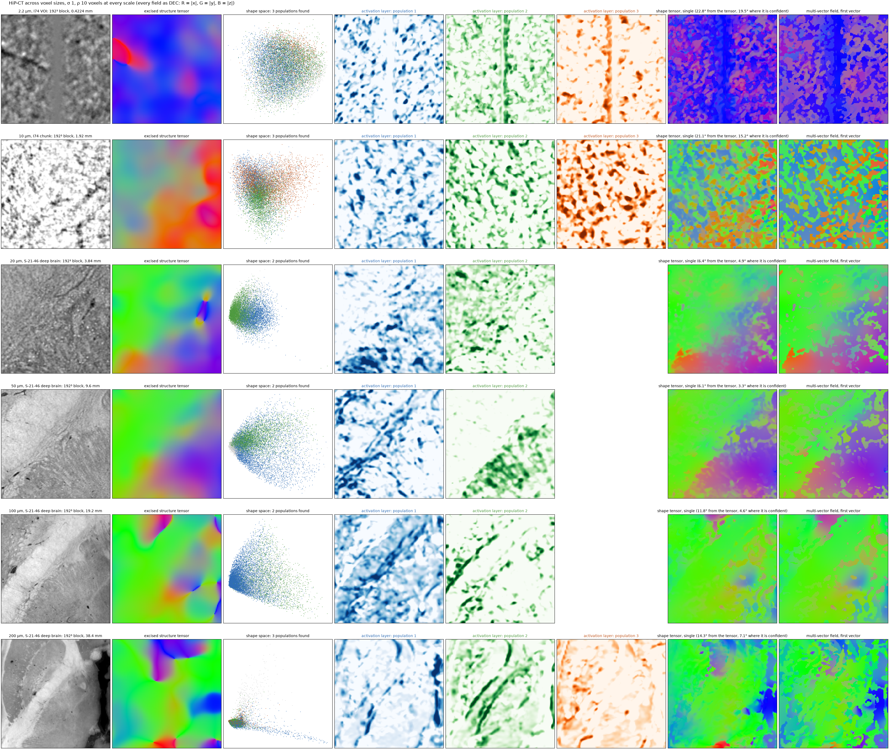
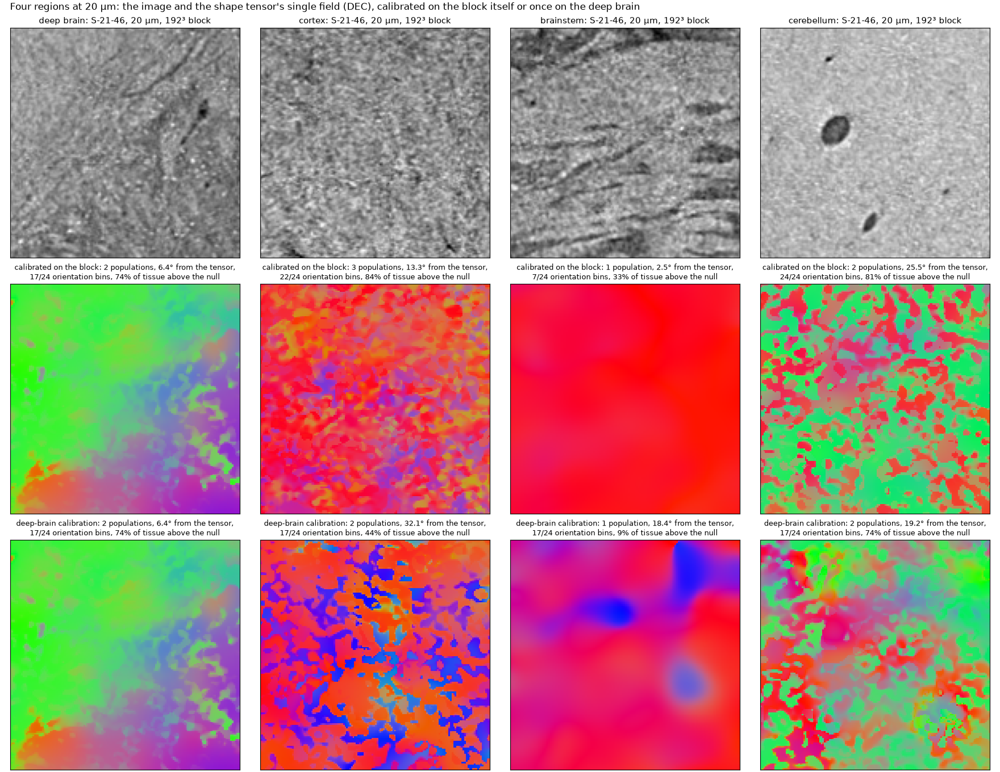
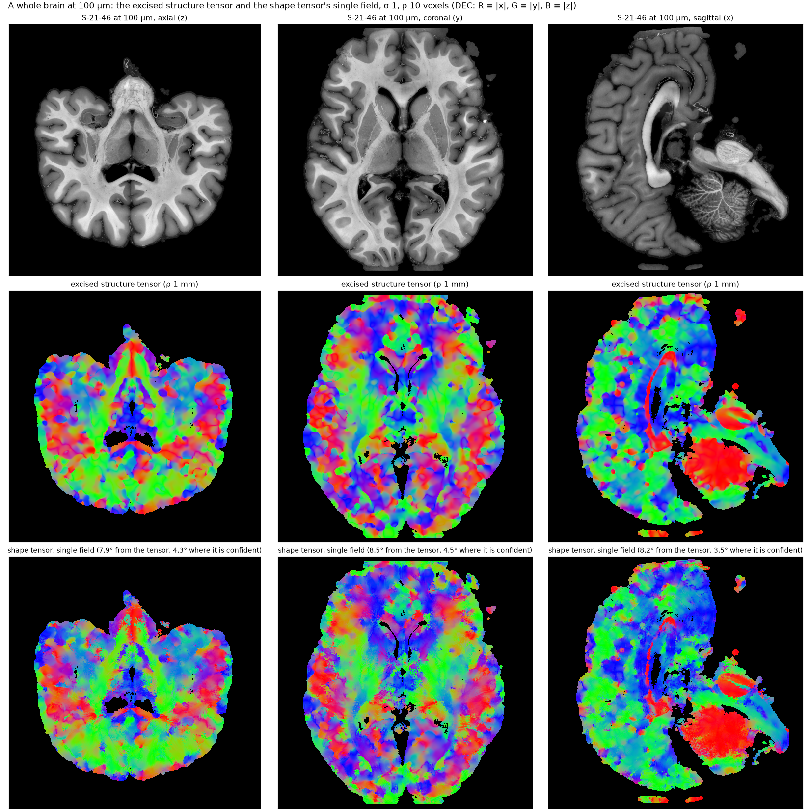

Scales, regions, a whole brain¶
The same pipeline, at the same settings (σ 1, ρ 10 voxels, calibration on the 384³ around a 192³ block, tissue = grey level above zero), on HiP-CT at six voxel sizes, on four regions of one brain at 20 µm, and over a whole brain at 100 µm. There is no truth on real data; what is reported is what the pipeline finds, and how far its single field is from the excised structure tensor at the same scales, over the tissue and where the tensor is confident (its top quarter by orientation gap). Every direction field is drawn as plain DEC at every voxel, the shape tensor's exactly as the structure tensor's.
python scripts/scales.py # docs/img/scales.png, docs/img/regions_20um.png, results/scales.json
python scripts/wholebrain.py run # the 100 µm brain: shape.zarr and st.zarr under /hdd/andrew/shapetensor_runs
python scripts/wholebrain.py figure # docs/img/wholebrain_100um.png, results/wholebrain_100um.jsonSix voxel sizes¶
The two finest blocks are from I74 (a 2.2 µm volume of interest and a 10 µm chunk); the four coarser ones are the deep brain of S-21-46, at 20 µm from its 20 µm scan and at 50, 100 and 200 µm from the levels of its 50 µm scan, centred on the same thalamic site. The parameters are in voxels, so the integration window runs from 22 µm to 2 mm down the figure and the network's 16-voxel receptive field from 35 µm to 3.2 mm.

- From 20 µm to 100 µm the pipeline reads the deep brain as two populations and its single field is within 5° of the excised tensor where the tensor is confident (6° to 12° over the block). At 50 µm the activation layers follow the fascicles that are visible in the image, one layer per direction of fibre bundle.
- At 200 µm the receptive field is 3 mm and the three "populations" are tissue classes: a band of white matter, the oriented edge of the ventricle, the rest. The field still agrees with the tensor (14°, 7° where confident), because both are now reading anatomy, not fibres.
- At 2.2 µm and 10 µm the voxels resolve cells, vessels and single axons. The features are read at a receptive field of 35 µm and 160 µm, the readers calibrate on whatever is oriented at that scale (a vessel is one of the three populations at 2.2 µm), and the single field departs from the structure tensor by 20° to 25°. The pipeline reads shape at the scale of its receptive field; the voxel size decides what a "fibre" is. For sub-cellular voxel sizes, downsample to the fascicle scale first.
Four regions at 20 µm¶
Deep brain, a gyral white-matter site, the brainstem and the cerebellar white matter of S-21-46, each a 192³ block.

Two things the figure settles about calibration.
- Self-calibration needs orientation diversity. The brainstem block's fibres run in one direction, its teacher occupies 7 of 24 orientation bins, the readers cannot learn an orientation code from one orientation, and the null rises until a third of the tissue is above it. The field is then the excised tensor weighted by a degenerate activation (2.5° from the tensor, weights that mean little).
- A calibration does not travel. The third row applies the deep-brain block's calibration to the other three regions: the cortex block goes from 13° to 32° from the tensor with 45% of its tissue above the null, the brainstem from 2.5° to 18° with 9% above, the cerebellum stays at 19° to 25°. The readers are specific to the local texture (its feature statistics, its signatures); a calibration from elsewhere in the same brain reads a region's populations poorly.
So the rule for a volume is calibrate every chunk on itself, and fall back to a volume calibration only where a
chunk's teacher covers too few orientations. That is what run_volume now does (calibrate_chunks, min_bins);
one calibration for the whole volume remains an option.
A whole brain at 100 µm¶
S-21-46 at 100 µm (1475 × 1493 × 1493 voxels, level 1 of its 50 µm scan), in 256³ chunks each calibrated on itself (the central 256³'s calibration as fallback), the chunks' merged tensors ramp-blended over a 32-voxel overlap at every face, chunks without tissue skipped, and the excised structure tensor over the same volume at the same σ and ρ (1 mm integration). The weights are zero where the masked volume has no data; the vectors are never masked. Every field is drawn as plain DEC.

121 chunks of 256³ held tissue, 95 were air and skipped; 114 chunks used their own calibration and 7 the volume's (a teacher with too few orientations, or too little oriented tissue to fit on). No chunk failed, and the field has no seams. On the three mid planes the single field is 8° from the excised tensor over the tissue and 4° where the tensor is confident. The shape pass took 2 hours at a median of 62 s per chunk (the per-chunk calibration, the overlap and the accumulators on top of the 26 s of stages 2–4), the blended write 6 minutes and the structure tensor 5 minutes. The two fields agree on the large structure, the corpus callosum, the internal capsule, the cerebellar peduncles; the shape tensor is the finer-grained of the two, following the gyral white matter and the cortex at the scale of its receptive field (1.6 mm here) where the structure tensor's 1 mm window has already averaged it.